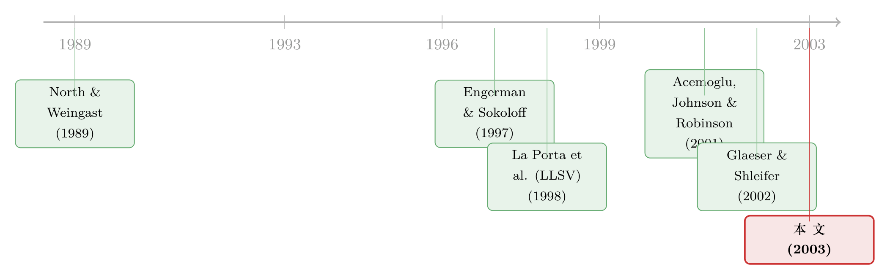

法律是行李，风土是地基——一篇用 70 个殖民地拆解金融起源的论文
本文读的是 Beck, Demirgüç-Kunt & Levine (2003, Journal of Financial Economics)：用 70 个前殖民地的横截面数据，把「金融体系为什么有的国家发达、有的国家羸弱」这个问题，同时交给两套对立的历史理论去解释——一套说决定因素是殖民者带来的法律传统（英国普通法 vs. 法国民法），另一套说决定因素是殖民者遇到的风土禀赋（疾病环境、定居者死亡率）。结论是：两套理论都站得住，但禀赋解释了更多的跨国差异。
1 一个绕不开的「为什么」
我们先从一个几乎是常识的判断出发：好的金融体系会推动经济增长。这一点，从 Levine (1997) 那篇综述开始，已经被反复验证到几乎没有人再怀疑。
可一旦你接受了「金融促进增长」，一个更尖锐的问题就立刻冒出来——那金融体系本身又是从哪儿来的？ 为什么美国、香港、新加坡的私人信贷可以超过 GDP 的 90%，而塞拉利昂、乌干达、安哥拉、扎伊尔却连 3% 都不到？为什么有的国家长出了保护私人合约、约束国家之手的强法律，有的国家却始终没有？
这不是一个「锦上添花」的问题。它是整条因果链最上游的那一环。如果你想知道一国今天的金融为什么是这副模样，你迟早要往回追，一直追到那些几百年前就被锁定、之后再难更改的初始条件上去。
本文要做的，恰恰就是这件溯源的工作。而它的聪明之处在于：它没有去发明第三套理论，而是把当时学界正吵得不可开交的两套理论，放进同一个回归框架里，让它们正面对撞。
2 两个故事，两条因果链
要理解这篇论文，你得先听懂它要裁决的这两个故事。它们的结论看起来都对，但讲的是完全不同的机制。
第一个故事：法律即行李（law and finance theory）。 这是 La Porta、Lopez-de-Silanes、Shleifer 和 Vishny（下称 LLSV, 1998）那条著名的脉络。核心论点是：法律传统在「保护私人投资者、对抗国家」这件事上有高下之分。英国普通法（Common law）是在议会与王权的拉锯中长出来的，法院站在了财产所有者一边，所以它天然地保护私产、便利私人缔约（North and Weingast, 1989 讲的就是 1688 年这场宪政转折）；而法国民法（Civil law）是拿破仑为了肃清腐败法官、巩固国家权力而设计的，它把法官降格成执行条文的官僚，更看重国家的权利而非个人投资者的权利。
关键的一步在于：这套法律传统是被殖民者当作行李带过来的。 法国人在征服地强推《拿破仑法典》，英国人在殖民地植入普通法。于是按这个故事，殖民者的身份至关重要——你被谁殖民，决定了你继承哪套法律，进而决定了你今天的金融发达程度。
第二个故事：风土即地基（endowment theory）。 这是 Acemoglu、Johnson 和 Robinson（下称 AJR, 2001）那篇划时代论文的逻辑，本文把它从「一般制度」搬到了「金融制度」上。AJR 的三段论是这样的：
- 欧洲人有两种截然不同的殖民策略。一端是定居（settler colonies），建立保护私产、约束国家的制度（美国、澳大利亚、新西兰）；另一端是榨取（extractive states），只为把黄金白银运回去而设制度（刚果、象牙海岸、大半个拉美）。
- 选哪种策略，不由殖民者的好恶决定，而由当地能不能活人决定。有些地方死亡率高得骇人——塞拉利昂公司开张第一年，72% 的欧洲人死掉；1805 年那支闯入冈比亚和尼日尔的探险队，全员没能活着走完行程。在这种地方，欧洲人只榨取、不定居。
- 最要命的是：这些制度在独立后顽固地活了下来。 榨取性制度一旦建好，独立后上台的本地精英会顺手接管它、继续榨取（Young, 1994 给了大量历史证据）。
所以按这个故事，殖民者是谁无所谓，当地的疾病/地理禀赋才至关重要。
把这两个故事并排放，对撞点就清楚了：法律理论里，殖民者的法律身份是因；禀赋理论里，殖民者遇到的死亡率是因。一个看「谁来了」，一个看「来到了什么地方」。本文的全部张力，就在于让这两个变量在同一个回归里争夺解释力。
（关于「疾病环境如何在几百年后仍掐着一国金融的脖子」这条线，本博客另有一篇可对照阅读：《一只苍蝇，如何在三百年后掐住了非洲人的钱包》。）
3 识别策略：为什么是「70 个前殖民地」
这篇论文本质上是一组跨国横截面回归（cross-country regressions）。它的识别逻辑不在花哨的计量技巧，而在样本的选择和外生变异的来源。
为什么只取前殖民地？ 两个理由。其一，AJR (2001) 已经为这些国家整理好了定居者死亡率（SETTLER MORTALITY）数据，这是禀赋理论实证的基石。其二——也是更深的一层——殖民本身提供了一个自然的识别条件。当欧洲征服者登陆时，他们把不同的法律传统外生地撒向了全球各地。殖民这段历史，相当于给「法律传统」做了一次近乎随机的分配，这正是因果识别梦寐以求的起点。这个 70 国样本只含英国和法国两种法律起源的国家（45 个法国民法、25 个英国普通法）。
回归的左边，是三个金融发展（financial development）的代理变量：
PRIVATE CREDIT：金融中介对私人部门的信贷 / GDP，剔除了对公共部门的信贷和金融机构间的交叉债权，度量金融中介发展，1990–1995 年均值。STOCK MARKET DEVELOPMENT：上市股票总市值 / GDP，度量股票市场规模。PROPERTY RIGHTS：政府执行私产保护法律的程度，1 到 5 的指数（来自 LLSV 1999 与《经济自由指数》），度量金融契约赖以运转的那块地基。
回归的右边，两个主角变量：FRENCH LEGAL ORIGIN（法国民法起源取 1，英国普通法被吸收进常数项里）与 SETTLER MORTALITY（定居者死亡率，禀赋的代理；稳健性检验里还用了纬度绝对值这个更粗糙的替代）。
最关键的设计在于控制变量。LLSV 当年只证明了「法律起源影响金融」，本文真正的推进，是在回归里塞进一大把可能的混淆因素——民族多样性（ethnic diversity）、宗教构成、自 1776 年以来的独立年数、以及大陆虚拟变量。只有当法律起源在控住这些之后依然显著，我们才有理由相信法律理论不是一个伪相关。这一步看似平淡，却是整篇论文的脊梁：它把 LLSV 的结论拖出来，逼着它经受禀赋、宗教、族群、独立时长的轮番拷问。
写成一个示意性的设定，就是对每个金融发展指标 \(y_i\)（国家 \(i\)）做：
$$ y_i = \alpha + \beta_1\,\text{FRENCH}_i + \beta_2\,\text{SETTLER MORTALITY}_i + \gamma'\,\mathbf{X}_i + \varepsilon_i $$
其中 \(\mathbf{X}_i\) 收纳上述控制变量。理论的对撞，最后就浓缩成一句话：当 \(\beta_1\) 和 \(\beta_2\) 同时上场，谁还站得住，谁的解释力更大？
4 数据先说话：两张图就把张力摆上了桌
在跑任何回归之前，论文先用描述性证据把两套理论各自的「初步证据」摆出来——这也是很典型的叙事手法：先让数据自己开口。
法律这一边。 按法律起源把 70 国一分，法国民法国家在 PRIVATE CREDIT、STOCK MARKET DEVELOPMENT、PROPERTY RIGHTS 三项上平均都更低，FRENCH LEGAL ORIGIN 与三个指标的相关系数都是显著为负。一个很扎眼的对比：普通法国家里有 8 个 PRIVATE CREDIT 超过 0.6（澳大利亚、加拿大、新西兰、马来西亚、新加坡、南非、香港、美国），而 45 个法国民法国家里，只有马耳他一个越过了 0.6 这条线。
但故事立刻出现了裂缝。 同一批数据也显示，法律起源远不能完全解释跨国差异：有一大批普通法国家金融极不发达——乌干达、塞拉利昂、加纳、苏丹、坦桑尼亚的 PRIVATE CREDIT 低到尘埃里。换句话说，光知道你是普通法国家，并不足以预测你的金融命运。 这道裂缝，正是禀赋理论要钻进来的地方。
禀赋这一边。 把国家按殖民初期的欧洲人死亡率排开，当年死人越多的地方，今天金融越落后。这与禀赋理论的预测严丝合缝：高死亡率 → 榨取型殖民 → 榨取型制度 → 独立后被精英延续 → 私产保护与金融发展受阻。
5 反转：两个都对，但风土赢了一筹
于是来到回归。结果是这篇论文最值得玩味的部分，因为它没有让任何一方完胜。
第一，两套理论都拿到了证据。 把法律起源和定居者死亡率同时放进回归、并控住族群/宗教/独立时长/大陆之后，FRENCH LEGAL ORIGIN 依然倾向于压低金融发展，SETTLER MORTALITY 依然显著地预测更低的金融发展。也就是说——法律传统和初始禀赋是两条都真实存在、且并不互斥的因果通道。 这本身就是一个重要结论：它替 LLSV 的法律理论挡住了「会不会只是禀赋的伪装」这一记重拳，同时也证明禀赋理论确实能延伸到金融部门。
第二，也是真正的反转——风土赢了一筹。 论文的核心判断是：初始禀赋解释了更多的跨国金融差异（abstract 原话：initial endowments explain more of the cross-country variation in financial intermediary and stock market development）。在金融中介和股票市场这两项上，禀赋的解释力盖过了法律起源。法律是殖民者随身带来的行李，而风土是脚下的地基——当两者相争，地基的分量更重。
第三，论文还堵死了一条退路：政治渠道。 有人会反驳：法律起源和禀赋之所以重要，会不会只是因为它们塑造了一国的政治体制，再由政治体制去影响金融？本文是第一篇专门检验这一点的——它问，法律和禀赋对金融的影响，是否超出了它们对政治制度的影响。答案是：法律起源、疾病与地理禀赋对金融发展的解释力，并不能被政治结构完全吸收。这意味着这两条历史通道是直接作用于金融的，而非仅仅借道政治。
必须诚实地说明一个边界：本文 Section 3 的完整回归表（具体的系数、t 值、\(R^2\)）不在我手头的正文截断之内，所以上面对回归结果的陈述，我只复述论文明确给出的定性结论与方向（两者皆显著、禀赋解释力更大、政治渠道不能吸收），以及正文里确凿的描述性数字（70 国、45 vs. 25、信贷 0.6 的门槛、死亡率 72% 等），而不杜撰任何一个我读不到的精确系数。这是读这类跨国回归论文时该有的克制。
6 文献脉络：从「法律」到「风土」的一次合流
把这篇论文放回它所处的学术坐标系，你会看到一条很清晰的演进线。
最早，是制度与产权的宏大叙事。North and Weingast (1989) 用 17 世纪英国的宪政变革说明，约束国家、保护产权的制度如何为金融埋下种子。

接着，法律起源学派登场。LLSV (1997, 1998) 把「产权保护」操作化成「法律传统」，用横截面证据指出普通法国家的外部融资和投资者保护系统性地更强——这是「law and finance」的奠基。
然后，一个自然的问题是：法律起源真的是因，还是另有更深的共同根源？ Engerman and Sokoloff (1997) 和 AJR (2001) 给出了一个截然不同的答案——禀赋。前者讲要素禀赋（适合大种植园 vs. 小农场）如何塑造长期制度，后者用定居者死亡率作为外生变异，证明初始禀赋经由殖民策略锁定了制度，再传导到今天的人均收入。与此同时，Glaeser and Shleifer (2002) 从理论上解释了为什么法国民法会演化出依赖「明线规则」、抬高国家、贬低法官的传统。
本文恰好站在这条合流处。 它第一次把「法律起源」和「定居者死亡率」请进同一个回归，专门针对金融发展做裁决。它既是对 LLSV 法律理论的一次严苛稳健性检验，也是把 AJR 禀赋理论第一次系统地延伸到金融部门。最后的判词——两者皆真，但禀赋更重——也与同期 Rajan and Zingales (2003) 「金融发展是政治的产物、会大起大落」的视角遥相呼应：金融的命运，深植于历史与政治的土壤之中。
（顺带一提，本文参考文献里的 Stulz and Williamson (2003) 走的是另一条互补的路——文化与宗教如何塑造债权人权利，本博客有评述：《宗教没写进合同，却写进了债权人的权利》。）
7 评论与延伸（Q&A + 研究方向）
(a) 几个可能的疑问
Q：法律起源和定居者死亡率会不会本身就高度相关，导致回归里互相「抢」解释力，系数都不可信？
这是跨国回归的经典隐忧。两者确有相关（高死亡率地区与特定殖民者/法律分布并非独立），但本文的处理是把它们同时放入回归并加控制项，看谁在控住对方后仍显著。结论是两者都保留了独立解释力，这反而说明它们不是同一个东西的两副面孔。当然，若共线性严重，单个系数的精度会下降——这正是为什么论文更强调「相对解释力」而非某个点估计。
Q：定居者死亡率真的外生吗？它会不会本身就和「这地方适不适合发展金融」相关？
这是 AJR (2001) 排除限制（exclusion restriction）的核心争论。AJR 的论证是：19 世纪欧洲士兵/传教士的死亡率主要由疟疾、黄热病等当地病原决定，与今日金融体系之间只通过制度这一条路相连。批评者（如后续文献）质疑死亡率数据的拼接与外推、以及疾病环境是否还有绕过制度的直接经济影响。本文继承了 AJR 的识别，也就继承了这份争议——它是这套结论可信度的真正软肋。
Q：金融发展只测了 1990–1995 年，会不会太短、太受当时宏观周期影响？
论文做了稳健性：把
PRIVATE CREDIT和STOCK MARKET DEVELOPMENT改用 1975–1995 年均值重跑，结论不变；只因 1975–1995 样本国家更少，才报告 1990–1995 的版本。所以这个担忧基本被堵上了。
Q：「禀赋解释更多」是否意味着法律理论被推翻了？
不是。这是本文很克制的地方——它反复强调两套理论并不互斥。法律起源依然显著、依然是一条真实通道；只是当两者同台，禀赋在金融中介和股市这两项上扛走了更大份额的跨国方差。把它读成「法律不重要」是误读；准确的说法是「在解释金融发展的横截面时，风土的边际贡献更大」。
Q：样本只剩英国和法国两种法律起源，会不会让结论失去一般性？
会损失外部有效性。德国、斯堪的纳维亚、社会主义法系国家被排除（因为缺定居者死亡率数据），最发达的那批国家也大多不在样本里。所以本文的结论严格说是「在前殖民地、且只含英法两系」这个总体内成立。把它推广到全球所有国家需要额外假设。
Q：PROPERTY RIGHTS 既是「金融发展」的左变量，又是法律/禀赋理论的传导机制，会不会循环论证？
论文对此是有意识的：它把
PROPERTY RIGHTS定位成「金融契约高效运转的关键投入」，而非金融部门规模本身，并坦承它可能有测量问题、未必能捕捉国家 vs. 私人权利的全部差异——这正是为什么论文同时用了三个不同的金融发展指标来交叉印证，而不押注在单一变量上。
(b) 几个可能的研究问题与提案
1. 法律起源 / 禀赋如何作用于「公司债与信用市场」？
【经济故事】本文的左变量是银行信贷和股市规模，却没碰债券市场。而债权人权利、破产法执行恰恰是法律传统差异最锋利的地方——普通法 vs. 民法在清算、重整、抵押品处置上的分野，理论上应在公司债的深度、利差、违约回收率上留下指纹。 【可行性】中。跨国公司债微观数据（如 Dealogic、Refinitiv）覆盖在扩大，可把本文的右手边变量直接接到债券市场结果上；难点在于很多前殖民地根本没有像样的公司债市场，样本会进一步缩水，识别需谨慎。
2. 法律起源是否塑造了一国对「外资持有人」的开放度与依赖度？
【经济故事】保护私人投资者对抗国家的法律传统，对外国投资者的吸引力可能比对本国投资者更强（外资更怕被征用）。若如此，普通法起源国应有更高的外资持债/持股占比，且在危机中外资行为也应不同。 【可行性】中。可用各国国际投资头寸、TIC、或 Koijen–Yogo 式的跨国持仓数据，把「法律起源」「定居者死亡率」当作外生工具去解释外资份额。挑战是外资份额受太多当代政策（资本管制）干扰，历史变量的「first stage」未必够强。
3. 禀赋通过哪条具体渠道压低了「流动性」？
【经济故事】本文停在「金融发展」的总量层面，但流动性（交易成本、市场深度）是更细的结果。榨取型制度可能通过弱执法、弱信息披露，直接抬高了二级市场的逆向选择成本。把禀赋一路追到 bid-ask spread 或 Amihud 非流动性上，会让机制更具体。 【可行性】中偏低。需要前殖民地股市的高频/日度交易数据，而这类市场恰恰数据最差；可先在有数据的一小撮新兴市场上做概念验证。
4. 「政治渠道不能吸收」这个结论能否用更现代的因果设计复核？
【经济故事】本文用横截面回归说政治结构吸收不了法律/禀赋的解释力。但 20 年过去，交错双重差分、合成控制等工具更成熟。若某些前殖民地经历了法律体系改革（如引入新破产法），可做事件研究，检验在政治体制不变时，单纯改法律能否撬动金融发展。 【可行性】中。需要找到干净的法律改革「冲击」且政治体制相对稳定的案例，可遇不可求；但一旦找到，识别会比纯横截面强得多。
8 我的判断
这篇论文的贡献，不在于发明了新理论，而在于它搭了一个公平的擂台。在它之前，「法律起源」和「禀赋」各自在自己的赛道上自说自话；是它第一次把两者按进同一个回归，逼出了一个有层次的答案——不是非此即彼，而是「两者皆真、禀赋更重、且都不只是政治的影子」。这种裁决性的实证工作，价值往往被低估：它让后来者不必再争「哪个理论对」，而能转向「在什么条件下、通过什么机制起作用」。
但我对识别有两点保留。其一，整套结论的可信度，押在 AJR 定居者死亡率的外生性上——这个工具本身这些年争议不小（数据拼接、疾病是否有绕过制度的直接渠道），本文继承了它的力量，也继承了它的脆弱。其二，样本太特殊：只剩英法两系、只含前殖民地、剔除了最发达国家，「禀赋解释更多」这句话的适用边界，比读者直觉中要窄。
我接下来最想看到的，是把这套「行李 vs. 地基」的框架，从总量金融发展推到结构层面——具体到债权人权利、破产执行效率、外资持有人占比、二级市场流动性这些更细的结果上。因为真正能区分两套理论机制的，往往不是「金融大不大」，而是「金融在哪个环节、对谁、以何种成本运转」。法律是行李，风土是地基；而我们最终想知道的，是这栋楼的每一层，究竟是行李堆出来的，还是地基撑起来的。
参考文献
Acemoglu, D., Johnson, S., Robinson, J.A. (2001). The colonial origins of comparative development: an empirical investigation. American Economic Review 91, 1369–1401.
Beck, T., Demirgüç-Kunt, A., Levine, R. (2003). Law, endowments, and finance. Journal of Financial Economics 70(1), 137–181.
Engerman, S., Sokoloff, K. (1997). Factor endowments, institutions, and differential paths of growth among new world economies. In: Haber, S.H. (Ed.), How Latin America Fell Behind. Stanford University Press, 260–304.
Glaeser, E., Shleifer, A. (2002). Legal origins. Quarterly Journal of Economics 117, 1193–1230.
La Porta, R., Lopez-de-Silanes, F., Shleifer, A., Vishny, R.W. (1997). Legal determinants of external finance. Journal of Finance 52, 1131–1150.
La Porta, R., Lopez-de-Silanes, F., Shleifer, A., Vishny, R.W. (1998). Law and finance. Journal of Political Economy 106, 1113–1155.
Levine, R. (1997). Financial development and economic growth: views and agenda. Journal of Economic Literature 35, 688–726.
North, D., Weingast, B.R. (1989). Constitutions and commitment: the evolution of institutions governing public choice in seventeenth-century England. Journal of Economic History 49, 803–832.
Rajan, R.G., Zingales, L. (2003). The great reversals: the politics of financial development in the 20th century. Journal of Financial Economics 69, 5–50.
Stulz, R., Williamson, R. (2003). Culture, openness, and finance. Journal of Financial Economics 70, 313–349.
Young, C. (1994). The African Colonial State in Comparative Perspective. Yale University Press.